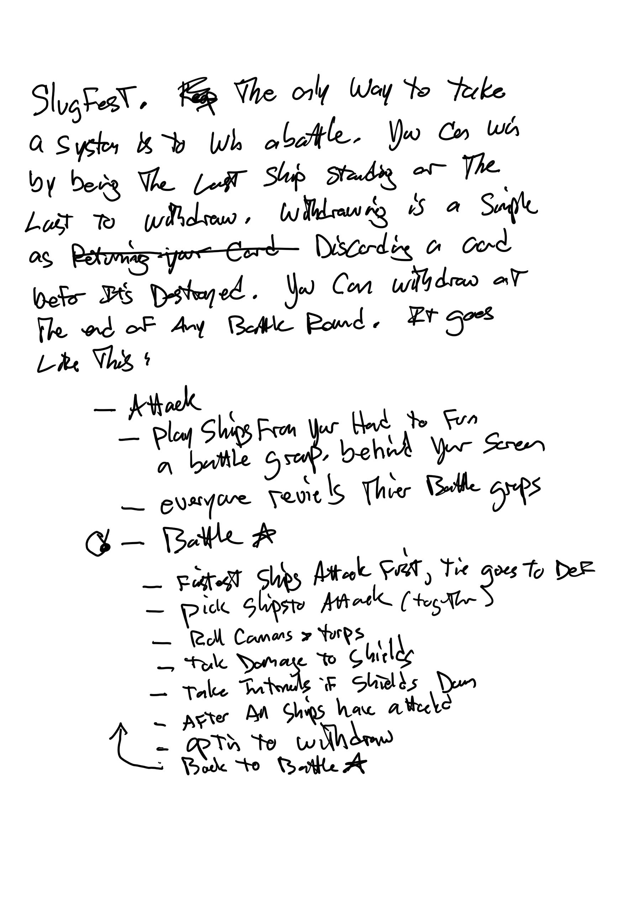

1. Intro
Space Skirmish is a fast-paced card game that focuses on the best elements of my favorite games: Deck Building, Evolving Strategy, Rolling Dice, Space Battles and Multiple Ways to Win.
We are fine young space fairing factions from the globular cluster M43 on an elliptical orbit around our local galaxy teaming with the remains of lost ancient civilizations. Perigee approaches. This galaxy is ours for the taking and now is the time. We descend upon the galactic plane like vultures to the feast.
Three basic abilities create all the combinations needed. Labs, Wrenches & Pew(Pew). Labs help you research technology and build out your tech tree. Completed tech trees make play easier and leads to mastery token that are worth victory points. Wrenches allow you to upgrade your ships to improve your chances in battle against Ancient Defense Forces or opponent factions.
2. Contents
Space Skirmish includes:
- 1 galactic core hex tile
- 3x3 Ancient Civilizations hex tiles
- 1 Ancient Civ deck mat with spots for 3 ancient civ decks
- Lots of ship cards. 6 types of ships at 3 stages
- Custom cannon dice (1-2=miss, 3-4=1 damage, 5=2,6=3)
- Custom torpedo dice (1-3=miss, 4-5=2 damage, 6=4)
- Custom damage dice (1 = torp, 6 = cannons, 2-5 = hull)
- 6 faction matts (one for each player)
- 6 pens
3. Tiles
3.1. Galactic Core
The galactic core anchors the map and is a special zone without ancient influence. Because of the high gravity and radiation in the core, sensors are useless and battle is impossible. Ships in the core are “just passing through”.
3.2. Ancient Civilizations
There are 3 ancient Civilizations that represent the types of cards you might find there.
- Lab/Wrench = Vinkaa
- Wrench/Pew = Zapotex
- Lab/Pew = Noc
- At the start of the game build decks of phase-1 cards matching the symbols for each. For example the Vinkaa deck is composed of 3 labs cards, three wrench cards and three lab/wrench cards. Follow this pattern for Zapotex and Noc.
4. Setup
Space Skirmish supports up to 6 players.
Place the galactic core hex tile near the center of the tile. This is a special tile the anchors the map and due to the high gravity and radiation in the core, ships scanners don’t work and battle is not possible.
Make three stacks of Ancient Systems tiles with one of each of the 3 Types
Determine the starting player.
Each player in order places a ancient civilization tile hex tile touching the galactic core and places a colony marker thereon. There are three colony markers.
Next, players places a second set of hex tiles anywhere on the map with two sides touching and places a ringworld marker thereon. There are 3 ringworlds.
Finally, players place the final set of tiles anywhere on the map with two sides touching and place dyson spheres thereon.
Continuing to the next player, each player in order places their faction marker on any spot except the galactic core. No two factions should start on the same tile.
Create starting decks of 9 cards. One of each of the 6 ( l,l/w,w,w/p,p,l/p or by the card names) stag-I cards and then three random stage 2 cards.
Create ancient decks with 12 cards consisting of two sets of the 6 stage-I cards shuffled.
5. Cards
All the cards are ships and the have two power ratings in the top left corner. These ratings are for building (wrench) and combat (laser). Building helps with upgrading your ships and advancing technology

6. Technology
On your faction sheet you have a technology tree and some cubes to mark your progress. Moving up the tech tree takes wrenches and you can spend you cards to build better tech.
7. Rules
7.1. Sequence of Play
Play follows a number of steps each turn.
Determine and first player and them each player plays in order.
7.2. Battle
